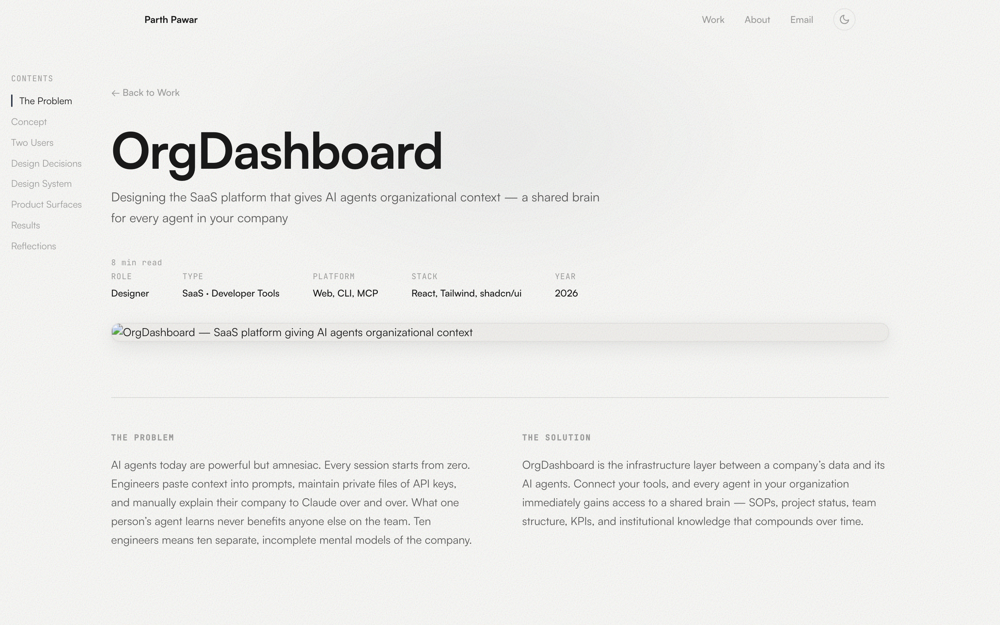

The Problem
AI agents today are powerful but amnesiac. Every session starts from zero. Engineers paste context into prompts, maintain private files of API keys, and manually explain their company to Claude over and over. What one person’s agent learns never benefits anyone else on the team. Ten engineers means ten separate, incomplete mental models of the company.
The Solution
OrgDashboard is the infrastructure layer between a company’s data and its AI agents. Connect your tools, and every agent in your organization immediately gains access to a shared brain — SOPs, project status, team structure, KPIs, and institutional knowledge that compounds over time.
Give Your AI Agents a Brain for Your Company
The root cause is simple: there is no shared infrastructure layer between a company’s data and its AI agents. Every agent session is a blank slate. Engineers waste cycles rediscovering information. Knowledge stays siloed. Without persistent context, agents can only handle simple, self-contained tasks — they cannot manage ongoing workflows or make decisions informed by cross-functional data.
OrgDashboard solves this by creating a persistent, shared knowledge layer. Companies connect their existing tools — Slack, Linear, QuickBooks, GitHub, PostHog, Google Workspace — and agents gain organizational awareness through a CLI and MCP server that plugs into any existing harness.
“The OrgDashboard CLI is not a standalone agent — it is an extension to any existing agent harness. When added as an MCP server to Claude Code, Zed, or Cursor, the agent gains organizational awareness without replacing any of the harness’s existing tools.”
One Platform, Two Fundamentally Different Users
The core design challenge was unprecedented: design a single platform that serves two users simultaneously — AI agents and humans — with completely different interaction models, needs, and capabilities. Agents operate through structured APIs and CLIs. Humans need visual dashboards and approval interfaces. Both need to read and write to the same knowledge base without stepping on each other.
“If an agent can find it through
— Design principle, OrgDashboardorg kb search, a human should be able to find it through the same logical path in the UI. One data model, two interaction paradigms.”
Three Bets That Shaped the Product
1. Grayscale-First Visual Language
For a developer-facing SaaS product, visual noise is the enemy. I designed a grayscale-first color system where the only source of color comes from the warm #fafafa background and intentional status indicators. No decorative color, no branded gradients. The palette uses rgba() opacity values for consistent tonal relationships — inspired by Linear, Vercel, and Stripe’s design sensibilities.
This restraint serves a purpose: when color does appear (a red destructive badge, a green active status), it carries real meaning. Developers notice it because the rest of the interface is deliberately quiet.
2. Agent-First Information Architecture
Most dashboards are designed for humans and then retrofitted with APIs. I inverted this. The information architecture was designed for agent consumption first — structured, queryable, composable — and the human dashboard was built as a visual projection of that same data model.
The knowledge base uses an agentic retrieval model, not pure RAG. Agents browse by type or tag, follow relationships, and explore iteratively. The web dashboard’s knowledge explorer mirrors this exact navigation model — if an agent can find something via org kb search, a human can find it through the same logical path in the UI.
org command in action, showing KB search, entity creation, and structured data retrieval
3. Progressive Trust Through Action Tiers
The action system was the most critical trust design. Reading data is free — agents should never hesitate to gather context. Writing to the knowledge base is auto-approved — building shared knowledge should be frictionless. But external actions — sending emails, posting to Slack, creating tickets, making purchases — enter an approval queue.
The approval interface had to be fast enough that humans don’t become bottlenecks, but informative enough that they can make confident decisions. Each pending action shows the full context: what the agent wants to do, why it proposed it, and what data it used to make the decision.
Design principle: The trust boundary lives at the point of external side effects. Internal knowledge building is always safe. External writes require human judgment. This distinction is baked into every surface — from the CLI’s command structure to the dashboard’s approval queue.
Built for Developer Trust
The design system was built from scratch for a developer-facing SaaS product. Three font families, each with a distinct purpose. A grayscale-first color system. Components that prioritize clarity over personality.
rgba(0,0,0,X) at consistent opacity stops. This creates natural tonal relationships and ensures every text shade has a clear purpose — from labels at 0.35 to body text at 0.55.Four Surfaces, One Coherent Experience
OrgDashboard lives across four distinct surfaces. Each was designed for its specific context while sharing a unified data model and design language.
org command that agents use to interact with the platform. Granular KB operations (search, create, update, append, replace), data reading from connected sources, and action proposals. Published to npm.Measuring Success Honestly
OrgDashboard is an early-stage product, so traditional business metrics like revenue or DAU don’t tell the full story yet. Instead, we focused on design quality indicators — signals that the product is solving the right problem in the right way.